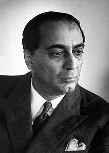

Tribute To Homi Jehangir Bhabha

- Father of Indian Nuclear Programme
- Founder of Tata Institute of Fundamental Research
- First Director of Bhabha Atomic Research Centre (BARC)
About the Legend
- Homi Jehangir Bhabha, born on 30 October 1909, came from a wealthy Parsi family, with his father Jehangir Hormusji Bhabha being a prominent lawyer and his mother Meherbai Framji Panday.
- He received his early studies at Mumbai's Cathedral and John Connon School.
- He was the first chairman of the Indian Atomic Energy Commission and secretary of the Department of Atomic Energy.
- He played an important role in the birth of the Indian space programme.
- Bhabha's upbringing instilled in him a love for music, painting, and gardening.
- At seventeen, Bhabha's self-portrait won second place at the prestigious Bombay Art Society's exhibition.
- In 1927, he went to England at Cambridge University. Although he began studying engineering per the wishes of his family, Bhabha was quickly drawn to physics.
- Bhabha returned to India before World War II to join the Indian Institute of Science, where he founded the Cosmic Ray Research Institute.
- In 1945, he founded the Tata Institute of Fundamental Research, where initial research for India’s nuclear program began.
- In 1954, Bhabha founded a nuclear research center at Trombay which was later renamed the Bhabha Atomic Research Centre (BARC).
- He was the founding director and professor of physics at the Tata Institute of Fundamental Research (TIFR), as well as the founding director of the Atomic Energy Establishment, Trombay (AEET) which was renamed the Bhabha Atomic Research Centre in his honour.
- A strong proponent of nuclear energy, Bhabha organized the first UN Conference on the Peaceful Uses of Atomic Energy in 1955. He was the head of India’s nuclear program until his death.
- Homi Bhabha died in a plane crash on the way to Geneva on January 24, 1966.
Quotes by or about Homi J. Bhabha
"My success will not depend on what A or B thinks of me. My success will be what I make of my work."
– Homi J. Bhabha
"It is not necessary to hope in order to undertake, nor to succeed in order to persevere."
– Homi Bhabha’s belief in action
"Homi Bhabha was not just a scientist, he was a builder of institutions and a builder of modern India."
– Dr. A.P.J. Abdul Kalam
"Bhabha gave India the atomic vision. He dreamed of a self-reliant nation in science and technology."
– Science historian quote